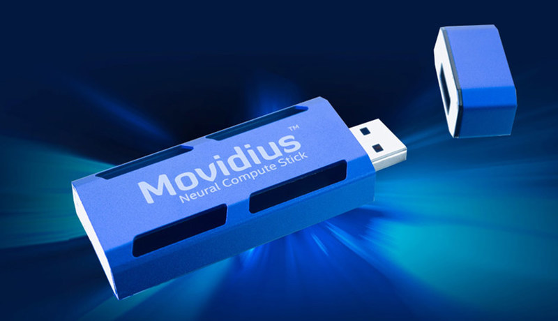
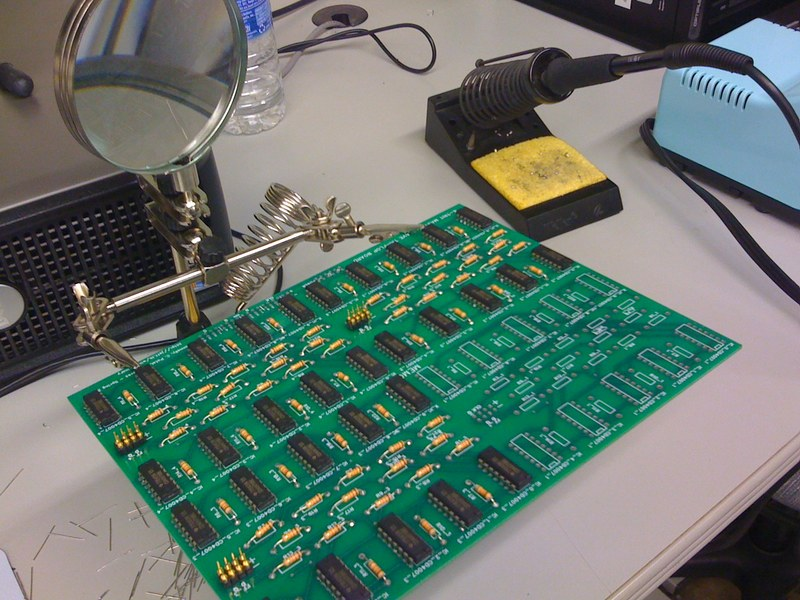

О троичной логике и троичных компьютерах

Не так давно я снова принял участие в подкасте "Опытные на кухне". Меня попросили выступить с докладом о компьютерах, работающих на базе троичной логики. Я конечно, и раньше слышал об их существовании, но информации о них достаточно немного, особенно если сравнивать с привычными нам компьютерами, которые оперируют нулями и единицами. И на то есть весомые причины. Троичные компьютеры - это крайне специфичные машины, которые в силу ряда причин широкого распространения не получили и, скорее всего, уже не получат. Далее я приведу материал, который изложил в подкасте. Когда он выйдет, я добавлю ссылку на сам выпуск. В материале изложена моя точка зрения на следующие вопросы: почему сейчас намного сложнее построить троичный компьютер, чем 50 лет назад, в чём его преимущества и недостатки по сравнению с двоичиным. А так же рассказано о тех экземплярах, которые когда-то всё-таки были созданы.
Системы счисления
Для начала на всякий случай нужно кратко объяснить, что же такое троичная система счисления и чем она отличается от двоичной и привычной нам десятичной. В быту мы все привыкли использовать десятичную систему и легко оперируем цифрами от нуля до девяти. Есть предположение, что если бы эволюция вместо десяти пальцев дала бы нам, скажем, 12, то и основной системой счисления у нас вероятно была бы двенадцатеричная и это было бы намного удобнее, ведь в отличие от десяти, двенадцать делится и на 2 и на 3 и на 4 и на 6, а десять - только на 2 и на 5. По крайней мере нам намного чаще было бы удобнее делить что-то в уме. Для кого-то мысль о том, что цифр может быть больше десяти, возможно покажется странной, но в принципе не так уж важно, как мы решим отображать какую-то конкретную цифру на письме. В шестнадцатеричной системе счисления первые десять цифр совпадают с цифрами десятичной системы, то есть, от нуля до девяти, а для записи недостающих цифр принято использовать буквы английского алфавита от A до F. В этом случае это уже не буквы, а именно цифры. Цифра A, цифра B и так далее. Количество этих цифр называется базой или основанием системы счисления. Для троичной и любой другой системы счисления с нечётным основанием, существуют два различных варианта - симметричная система счисления и несимметричная. Первая является симметричной относительно нуля и в случае с троичной системой использует в качестве цифр минус (или минус единицу), ноль и плюс (или единицу). Несимметричная - ноль, единицу и двойку.
Что же зависит от того, каким набором цифр мы оперируем - двумя, десятью или каким-то иным количеством? Как минимум это то, в какое количество разрядов поместится то или иное число. Например, число менее десяти для нас укладывается в один разряд, число от десяти до девяносто девяти - в два разряда и так далее. То есть, количество разрядов для хранения одного и того же объёма информации - это другими словами количество цифр, которые нам нужны для того, чтобы это число записать. Для десятичной системы два больше двадцати в 10 раз, то есть, основание системы счисления говорит о том, в какое количество раз цифра в старшем регистре (то есть, стоящая левее) больше аналогичной цифры в младшем регистре (то есть, стоящей правее). Для примера, единица в двоичной записи это единица. Единица и ноль справа - уже в два раза больше, то есть, двойка, а единица с двумя нулями - это два в третьей степени - два, умноженное на два, умноженное на два, то есть восемь и так далее. Системы счисления, построенные на этом принципе называются позиционными.
Ну и ещё один пример, который позволит почувствовать разницу в основании систем счисления. Если мы возьмём десять разрядов для хранения числа с использованием несимметричной системы счисления, то максимальное число в двоичной системе, помещающееся в эти десять разрядов будет равно 1024 (на самом деле 1023, потому что ноль - это тоже число, но допустим, мы считаем с единицы), в троичной системе счисления это будет число 59049, а в десятичной это уже десять миллиардов.
Почему в электронике используется двоичная система счисления?
Почему же практически все и современные и архаичные процессоры, микроконтроллеры, системы хранения и обработки данных используют именно двоичную систему счисления? Ведь если бы она была троичной, то за один такт какой-нибудь микроконтроллер смог бы оперировать числами, имеющими намного бОльшие абсолютные значения. Если же перевести системы хранения на троичные, то и тут, казалось бы, тоже откроются неплохие перспективы.
На самом деле всё очень просто и здесь опять можно вернуться к аналогии с десятью пальцами - у привычного компьютера есть очевидные аппаратные ограничения - у него для счёта изначально было всего два, если можно так выразиться, “виртуальных пальца” - ноль и единица. Когда-то существовали компьютеры, построенные на базе реле, потом были ламповые компьютеры, ну и наконец, компьютеры на транзисторах, которыми мы пользуемся и по сей день, просто транзисторы очень компактно упакованы в процессоры (это конечно упрощённо), но на протяжении всего этого эволюционного процесса любая минимальная логическая единица могла принимать только два значения. Если рассматривать реле, то оно либо включено, либо выключено, оно никак не может быть включено наполовину. Транзистор например, может быть открыт не полностью, но у него нелинейная характеристика внутреннего сопротивления. Создать процессор, внутри которого возможно будет удерживать множество транзисторов в полуоткрытом состоянии - инженерно намного более сложная задача, нежели использовать транзисторы как ключи - либо транзистор открыт, либо закрыт. Магнитное поле имеет всего две ориентации полярности - плюс и минус. То есть, участок магнитной поверхности на диске или ленте также может принимать всего два состояния. Отверстия в перфокартах либо есть, либо их нет. Флеш память изначально была построена на транзисторах с плавающим затвором, принимающим два состояния.
Сложности реализации
Если обобщить, то есть множество физических явлений, имеющих два устойчивых состояния и на этих явлениях базируются различные разработки - те же реле, магнитная запись и многое другое. Если мы будем использовать некие дополнительные значения кроме нуля и единицы, мы неизбежно столкнёмся с широким рядом сложностей. Например, физическое затухание сигнала при передаче данных по кабелю или по радиоканалу. При бинарной логике мы принимаем в каждый момент времени либо логическую единицу, то есть, наличие сигнала, либо логический ноль, то есть, его отсутствие. Предположим, мы решили предавать троичный сигнал. В этом случае ноль - это отсутствие сигнала, единица - это наличие сигнала, а третье значение - это сигнал половинной мощности. В идеальном мире это работало бы хорошо, в реальном мире любой провод так или иначе служит антенной, на которую воздействуют электромагнитные волны различной частоты, существуют перепады напряжения в источниках питания, а радиоэфир на некоторых частотах - это просто кошмар. Тот же вайфай, работающий на частоте 2.4 гигагерца в многоквартирных домах напоминает арену, на которой за полосу пропускания борется несколько десятков устройств, многие из которых в зависимости от канала так или иначе влияют на работу друг друга. То есть, уровень сигнала может плавать, а может и резко меняться под воздействием внешних факторов. Например, включенной кем-то микроволновки. Конечно, всё это решаемо на уровне алгоритмов обработки ошибок, но сложность реализации в результате неизбежно будет повышаться.
То есть, для того, чтобы создать компьютер, использующий троичную логику, необходимо выполнить несколько условий: Во-первых, создать процессор, обрабатывающий данные в троичной системе счисления, то есть, найти замену транзистору, которая сможет принимать три устойчивых состояния. Во-вторых, желательно найти некий энергонезависимый носитель информации, который для каждой своей ячейки хранения мог бы принимать три устойчивых состояния. Можно обойтись и существующими, но использоваться они будут неэффективно. В-третьих, разработать алгоритмы обработки и передачи данных, базирующихся на троичной системе.
Текущие возможные компоненты
Мне стало любопытно и я решил разобраться, что можно было бы использовать сейчас для удовлетворения первого и второго пункта.
Магнитный способ хранения информации очевидно, не подходит в силу особенностей физических законов. А вот о флеш памяти я узнал для себя много нового. Из того, что касается нашей темы, нужно сказать, что элементарная ячейка флеш памяти бывает двух типов - SLC (single-level cell) и MLC (multi-level cell). Ячейка первого типа хранит в себе один бит информации и может принимать только один уровень заряда, а вот ячейка второго типа - может принимать несколько уровней заряда. Под MLC обычно понимают ячейку с четырьмя возможными уровнями заряда, которая хранит два бита, но существуют также и TLC (Triple-level cell) и экспериментальные QLC (Quad-level cell), которые могут хранить 3 и 4 бита информации соответственно, то есть они имеют возможность хранить 8 или 16 уровней заряда. А значит, сделать ячейку для хранения троичных данных в чистом виде - сейчас вполне реально. Достаточно реализовать хранение трёх, шести или девяти уровней заряда. Чем большее количество уровней заряда на ячейке хранится, тем меньше её надёжность и меньше количество возможных циклов перезаписи. То есть, шесть уровней на текущий момент скорее всего можно назвать оптимальным числом.
Теперь о замене транзисторов: с этим всё намного сложнее. В принципе, транзисторы издавна используют в составе усилителей. То есть, теоретически мы могли бы использовать обычные транзисторы, которые будут в каждый момент времени либо закрыты, либо открыты, либо открыты наполовину. Но так как в наборах машинной логики транзисторы работают в цепочках и логический выход одного транзистора может быть соединён с логическим входом другого, то ток, выходящий даже с открытого наполовину транзистора, направленный на вход другого, откроет его уже полностью и промежуточное состояние перенести не удастся. Возможно, если изменить соотношение площадей переходов база-коллектор и база-эмиттер, удастся получить некий пропорциональный электронный ключ, транзистор, который не усиливает сигнал, а лишь открывается полностью либо наполовину, но и в этом случае есть проблемы - вместо цифрового компьютера мы фактически будем собирать аналоговый, а погрешность в уровне сигнала при прохождении через каждый такой транзистор будет накапливаться и в итоге приведёт к превращению одного значения в другое и, как следствие, к ошибкам.
В сети есть множество схем логических блоков с тремя устойчивыми состояниями, построенных на паре - тройке отдельных транзисторов и небольшой обвязке. Но мне явно не хватает опыта и фантазии, чтобы представить, как на базе этих модулей аппаратно реализовать простейшие операции, используя троичную логику, тем не менее, это отнюдь не является неразрешимой проблемой и все описанные выше задачи реализуемы, но процесс их реализации намного сложнее, нежели привычные нам устройства, базирующиеся на двоичной логике, которые тоже простыми назвать совершенно нельзя.
Поэтому следует понимать, что если сейчас создать троичный компьютер, то из-за фундаментальных отличий в своей архитектуре, он не сможет работать ни на одной из существующих операционных систем. Разработку придётся начинать с самого нуля - с языков программирования и ядра операционной системы, а это сотни тысяч часов работы квалифицированных специалистов.
Двоичная логика - подмножество троичной и решаемые задачи
Да, двоичная логика является подмножеством троичной и в принципе, можно создать троичную систему, которая позволит портировать под неё существующее программное обеспечение хотя бы частично и с некими ограничениями, это само по себе неплохо, так как позволило бы реализовать миграцию с двоичных приложений и библиотек на троичные постепенно, но если и стОит создавать троичный компьютер, то явно в первую очередь не с целью запуска двоичных приложений, а с целью получения прироста в производительности по сравнению с двоичными системами при решении неких определённых задач.
А вот тут мы подходим к самому главному вопросу - для каких же задач троичный компьютер будет более эффективен, чем двоичный? И чем троичная система счисления может быть более удобна для хранения и обработки данных?
Во первых, это задачи, в рамках которых необходимо производить множественные сравнения величин, одна из которых может быть больше другой, меньше другой, либо равна ей. Эти операции куда эффективнее могут быть реализованы на базе троичной логики и это будет работать минимум в два раза быстрее, чем на машинах с бинарной логикой, как и вообще любое сравнение двух чисел. А задачи сравнения встречаются достаточно часто, в том числе и в криптографии.
Во-вторых, это любые задачи, в которых существует элемент неопределённости. То есть, одно свойство может принимать значения “да”, “нет” и “не да и не нет”. Думаю, это позволило бы оптимальнее расходовать ресурсы при обучении нейронных сетей. Но дело в том, что для обучения нейронных сетей сейчас уже совершенно другие, более оптимальные аппаратные решения, учитывающие куда больше специфики задачи, чем позволит реализовать троичный компьютер.
В-третьих, это задачи, оперирующие числами, кратными тройке.
В-четвёртых, задачи, связанные с обработкой изображений, цвет которых хранится трёх каналах (RGB).
В-пятых, это задачи, связанные с рассчётом пространственных координат (x,y,z).
В-шестых, для бинарного компьютера, если нам нужно хранить в памяти число, которое может принимать отрицательное значение, то в ту же по объёму ячейку памяти мы сможем записать лишь в два раза меньшее число. Например, вместо значений от 0 до 255 переменная будет принимать значения от -127 до 128. Симметричная троичная система позволит для этого использовать знак трита старшего разряда. И, как следствие, изменение знака числа, сравнение по абсолютному значению и некоторые другие операции, связанные с работой с отрицательными числами так же будут занимать меньше тактов процессора. Например, вычитание будет дешевле с точки зрения использования ресурсов, так как будет реализовано, как сумма с числом, инвертированным по знаку.
Если говорить о блоках машинной логики и дополнить аналогию с десятью пальцами и десятичной системой счисления, то блок наборов поддерживаемых команд можно сравнить с таблицей умножения, которую мы выучили в школе. Мы способны мгновенно сказать, сколько будет триджы восемь или пять ю пять, но не способны перемножать даже трёхзначные числа в уме, для этого нам приходится разбивать задачу на несколько более простых действий и сводить её к решению множества простых задач умножения чисел в пределах знакомой нам таблицы умножения. С процессором примерно так же. И там, где для компьютера, основанного на двоичной логике придётся разбивать задачу на два, три или даже четыре такта, компьютер, основанный на троичной логике может справиться и за один такт.
Почему троичных компьютеров нет сейчас?
Почему же троичные компьютеры не встречаются сейчас? Они банально нерентабельны. Когда я говорил, что некоторые операции на троичном компьютере будут выполняться быстрее, чем на двоичном, я сделал огромное допущение. Это было бы правдой, если предположить, что троичный процессор будет работать на той же тактовой частоте и за каждый такт обрабатывать не меньшее количество инструкций на не меньшем наборе данных, что и двоичный процессор. В реальности такое вряд ли возможно.
Огромные корпорации производят процессоры, память и накопители, построенные на двоичной логике. Как транзисторы, так и сами процессоры прошли долгий эволюционный путь, они становились всё быстрее, всё меньше в размерах, всё энергоэффективнее. Если мы даже найдём элемент, принимающий три стабильных состояния и способный заменить собой транзистор, то мы вряд ли сможем сразу добиться от него той же эффективности, что и от современных транзисторов. Структура троичного процессора будет несоизмеримо сложнее, он неизбежно будет иметь бОльший размер и меньшие частоты, что скорее всего сведёт на нет выигрыш в производительности. Производство троичной машины будет настолько дороже, что выгоднее будет приобрести намного более мощную двоичную машину за намного меньшую цену и сэмулировать на ней троичную логику, либо решить необходимую задачу алгоритмически.
Узкоспециальные устройства
Иногда для выполнения каких-то специфических задач действительно выгоднее разработать узкоспециализированное устройство, которое будет выполнять строго ограниченный набор логических операций, зато будет это делать во много раз быстрее.
Когда был бум майнинга криптовалют, в числе прочего разрабатывались и так называемые ASIC майнеры, выполненные в форм факторе небольшого устройства, подключаемого по USB и напоминающего большую флешку. На борту они несли специализированный чип, заточенный исключительно на вычисление хэшсумм. Таким образом некоторые люди майнили криптовалюту, подключив несколько десятков таких устройств к какой-нибудь Raspberry PI через USB хабы с внешним питанием.

Сейчас трендом является искусственное обучение и нейросети. Но только очень богатые корпорации могут себе позволить строить нейрокомпьютеры с нуля. Остальные используют для обучения нейросетей видеокарты или специальные внешние нейросопроцессоры. Существует такое устройство как Intel Movidius и выглядит тоже как большая флешка, точно так же подключается к любой машине по USB и позволяет использовать сопроцессор для глубокого машинного обучения в паре с сопутствующими библиотеками.
Так что если и появится в обозримом будущем троичный компьютер, то скорее всего в подобном форм-факторе, как внешний сопроцессор с набором сопутствующих библиотек, но не как отдельная полноценная система, по крайней мере изначально.
Существовавшие троичные компьютеры
Если сейчас прогресс двоичных систем ушёл так далеко, что троичным компьютерам их уже не догнать, то когда был переломный момент? Когда появление троичных компьютеров было возможно? На мой взгляд, это было, когда понятие “центральный процессор” ещё не появилось, а компьютеры собирали на массивах отдельных логических элементов, будь то реле, лампы или транзисторы. Первый центральный процессор был выпущен компанией интел в 1971-м году, то есть, переломный момент мог бы произойти до 1970-го года. И успешные попытки создания компьютеров на базе троичной логики в то время были.
Сетунь

Первый троичный компьютер был создан в 1959-м году учёными из Московского Государственного университета под руководством Николая Петровича Брусенцова и назван “Сетунь” - это название имела небольшая речка, которая протекала недалеко от университета. Вместо привычных нам байт он оперировал трайтами - эта единица информации состояла из шести трит. А трит соответственно был троичным аналогом бита. Для использования преимущества в обработке троичных чисел, использовалась симметричная троичная система счисления, то есть, “Сетунь” оперировала числами -1,0 и 1. Машина работала на частоте в 200 килогерц. Кстати, серийный и широко известный в то время в узких кругах компьютер PDP-1, созданный в Массачусетском технологическом университете в 1960-м году, работал на точно такой же тактовой частоте. В качестве внешней памяти в “Сетуни” был использован магнитный барабан, ёмкостью в 4000 трайт, а в качестве оперативной памяти - матрица катушек на ферритных сердечниках (всего 7000 ферритовых колец), из-за необходимости хранения троичных данных, на каждом кольце было по три обмотки. Более сложное устройство памяти привело к тому, что чтение и запись в память были реализованы последовательно поэтому за одну секунду “Сетунь” могла выполнить по разным данным от четырёх до четырёх с половиной тысяч операций. Для сравнения, та же PDP-1 выполняла большинство математических операций со скоростью около ста тысяч операций в секунду.
Ввод и вывод был реализован с помощью телетайпа и перфоленты. Занимала “Сетунь” примерно 30 квадратных метров, потребляла около 2.5 киловатт энергии.
Для Сетуни был написан собственный язык программирования. В одной из статей бы написано “даже собственный язык программирования”, что довольно забавно, потому что без написания языка программирования для использования преимуществ троичной логики, создание самого компьютера абсолютно теряло бы смысл. “Сетунь” была первым серийным компьютером на базе троичной логики и выпускалась на Казанском заводе математических машин с 1962-го по 1965-й год. Всего было произведено по одним данным 46 единиц по другим - 50, 30 из них использовались в различных университетах СССР.
Первый экземпляр “Сетуни” безотказно работал в вычислительном центре МГУ более 15 лет и практически не требовал обслуживания и ремонта (в отличие от того же PDP-1).
Цена сетуни
Что интересно, ряд инженерных решений, связанный в основном с устройством памяти, позволил по тем временам добиться рекордно низкой цены “Сетуни” - 27,5 тысяч рублей. Я поинтересовался курсом доллара в то время, он составлял 0.25 доллара за рубль или 4 рубля за доллар, то есть, стоимость “Сетуни” составляла 6875 долларов. Стоимость PDP-1 в этот момент составляла около 120 тысяч долларов в полной комплектации и 85 тысяч долларов в минимальной. Конечно, PDP-1 была порядочно мощнее, но в то время и PDP-1 была прорывом в области цены, так как другие компьютеры того времени стоили более миллиона долларов. Число заказов росло, в том числе и из-за рубежа, но чиновники радиоэлектронного ведомства не содействовали наращиванию объёмов производства, а наоборот, жёстко ограничивали выпуск, отклоняя заказы, в том числе воспрепятствовали запуску крупносерийного производства в Чехословацкой социалистической республике.
Цитата из компьютерры
Нашёл информацию в компьютерре за 2011-й год, откуда приведу цитату:
Проект “Сетунь” попал под закрытие в рамках наведения порядка в разнообразном парке советских ЭВМ того времени. Один из членов государственного радиотехнического комитета (ГКРЭ), всеми уважаемый директор конструкторского бюро, отмахнулся от “Сетуни” фразой: “Нам видеть её и знать не надо. Покажите бумагу с с авторитетными подписями и печатями”. Только благодаря вмешательству академика Соболева межведомственная комиссия ГКРЭ летом 1960 года провела тщательные недельные испытания троичного компьютера, в результате которых признала “Сетунь” “первым действующим образцом универсальной вычислительной машины на безламповых элементах, создание которой является определённым достижением в вычислительной технике”. Ни больше ни меньше.
Казанские инженеры, не вдохновлённые низкой стоимостью “Сетуни”, не горели желанием выпускать её серийные образцы в запланированные сроки. При том, что феррит-диодные усилители, базовые элементы троичного компьютера, поставляли в Казань с Астраханского завода электронной аппаратуры, они стоили всего три рубля пятьдесят копеек. Более того, своими “инженерными” изысканиями казанские производители так и норовили внести в отлаженную конструкцию троичного компьютера модификации, приводившие к его неработоспособности.
Бригада разработчиков “Сетуни” фактически поселилась на заводе, занимаясь постоянной отладкой серийных машин.
// Конец цитаты
В 1970-м году была создана машина “Сетунь-70”. Многое было улучшено, в том числе увеличен объём памяти, реализована система прерываний, уменьшена потребляемая мощность, улучшен транслятор в машинные коды, а перед печатью на перфоленту “Сетунь-70” преобразовывала троичный код в двоичный, что позволило существенно облегчить перенос данных между “Сетунью” и двоичными компьютерами. Тем не менее, распространения и эта модель так и не получила.
Очередные бюрократические зачистки, направленные на искоренение в вузах проектов разработки собственных ЭВМ привели к тому, что Сетунь-70 была перемещена на чердак студенческого общежития в МГУ, после чего периодически использовалась для проведения тестирования студентов. На одном ресурсе я нашёл онлайн эмулятор “Сетуни”, но поразбираться в нём не успел. Если кому-нибудь будет интересно - дам ссылку.
Ternac
В 1973-м году в США создали Ternac - это был троичный эмулятор, написанный на fortran и работающий на двоичном компьютере Burroughs B1700. Это было то, что сейчас принято называть “proof of concept”, то есть, экспериментом, целью которого было доказать возможность реализации обработки троичной логики на двоичной машине в принципе. Говорится также, что скорость и расход памяти были того же порядка, что и при двоичных вычислениях, хотя я не понимаю, как это возможно. Эмуляция троичной логики на двоичной машине неизбежно должна повлечь за собой дополнительный расход ресурсов.
TCA2

Из самого свежего, что мне удалось обнаружить, было упоминание о создании в Калифорнийском Политехническом университете трёхтритной цифровой компьютерной системы ТСА2 на интегральных транзисторах. Я изучил вводную часть доклада, насколько мне позволило знание английского языка. Речь идёт о реализации машинной троичной логики и собственной версии ассемблера тремя студентами под руководством профессора. То есть, эта система не имеет процессора как такового, а логика реализована в виде отдельных блоков. Реализация по уровню сложности примерно соответствует разработкам компьютеров 70х годов, но использует современную на тот момент элементную базу - никто уже не пользуется ферритными катушками и лампами. Но с практической точки зрения разработка особого интереса не представляет.
Итоги
Подводя итог, можно сказать, что в своё время отличная возможность создания новой эволюционной ветки компьютеров, базирующихся на троичной логике, была задушена бюрократией и, вероятно, косностью мышления людей, не желающих выходить за рамки привычного положения вещей. В текущий момент создание троичных компьютеров вполне возможно практически, но совершенно экономически неоправдано, зато можно заметить активное зарождение другого не менее интересного направления, чему свидетельствует появление отдельных чипов для обучения нейросетей, и бурное развитие квантовых компьютеров.
Ссылки на использованные источники
“Троичный компьютер: Да, нет, может быть: Логика”
“О хромой двоичной логике и правильной троичной”
“Троичные ЭВМ “Сетунь” и “Сетунь 70”
“Троичный компьютер” - история создания
“Советская «Сетунь» — единственная в мире ЭВМ на основе троичного кода”